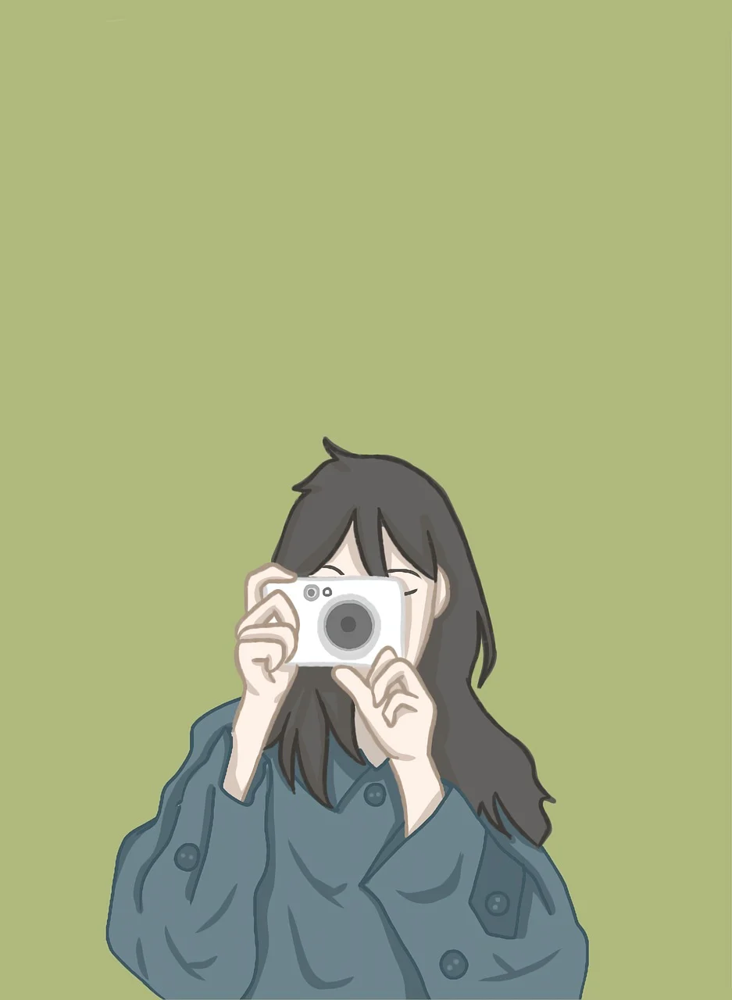

Freedom for women is the core right to make independent choices about their bodies, careers, and personal lives without fear or social constraints.What Freedom MeansPersonal control: The power to choose one's own path, career, and lifestyle.Bodily autonomy: Complete authority over personal health and reproductive decisions.Safety: The ability to live and move without facing harassment or violence.Equal voice: The right to express opinions and participate fully in society.
Common BarriersRigid traditions: Strict social rules that limit a woman's clothing, movement, and ambitions.Unbalanced labor: The unfair expectation that women must handle all unpaid household work.Financial control: Rules or pressure that block women from earning their own money.Safety fears: Threat of harm in public spaces, transport, or workplaces.Core Areas of IndependenceEducation: Equal access to learning and skill development.Workplace equality: Fair pay and open doors to leadership roles.Expression: Freedom to choose clothing, personal beliefs, and life partners.
